Listings
Let’s add a blog
blog/ has some folders with documents in them
Demo:
- Make a new page
blog/index.qmd - Make it a listing:
As simple as:
---
title: My Blog
listing: default
---Explicit default options:
---
title: My Blog
listing:
contents: /
sort: "date"
type: default
categories: false
---A listing is…
- an automatically generated list of content
- styled via a template, (built-in
type, or customtemplate) - can be included on any page
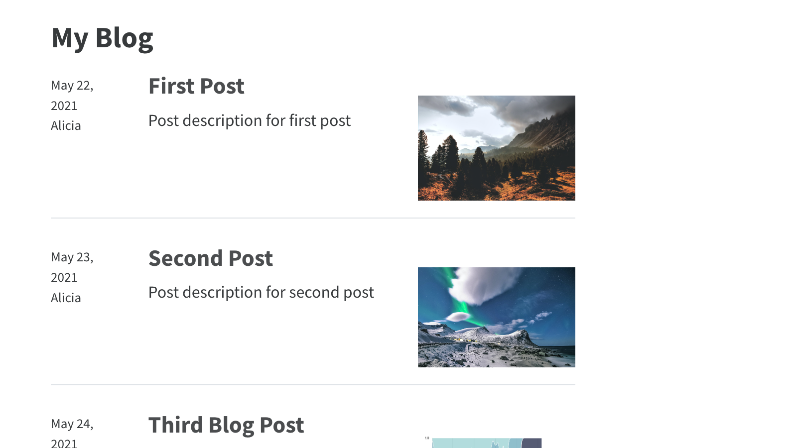
Generated from documents in contents
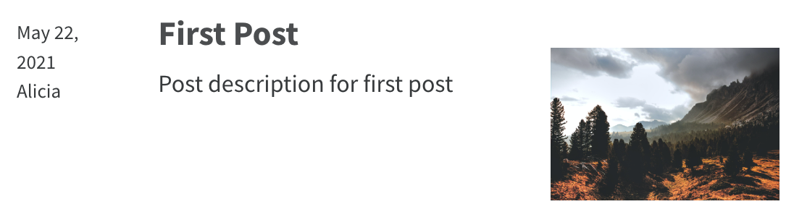
blog/third-post/index.qmd
---
title: "First Post"
description: "Post description for first post"
author: "Alicia"
date: "5/22/2021"
image: "cover.jpg"
categories:
- Science
- Technology
---Why use a listing?
- Great for large collections
- Great for collections that grow
Your Turn
- (Repeat) Make a new page
blog/index.qmdwhich is a listing - Experiment with
typeandcategories:type:gridortablecategories:true,unnumbered,cloud
- Discuss with your neighbor:
- What makes this a blog?
- What would you change if this was a gallery of your projects?
Default
Grid
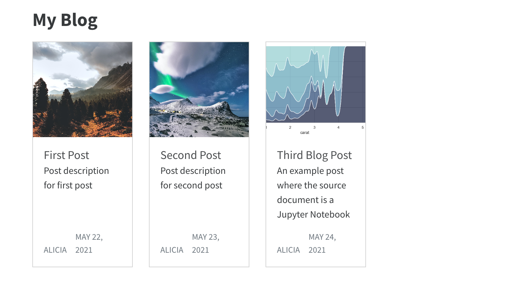
Table
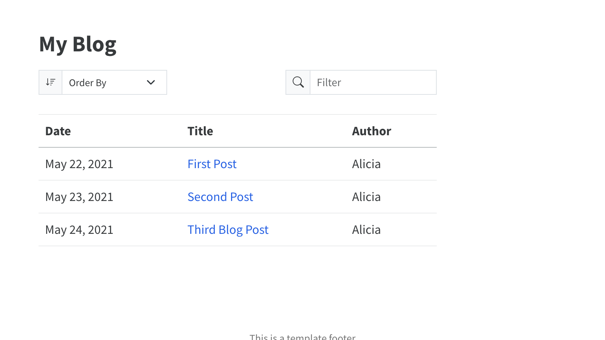
Categories
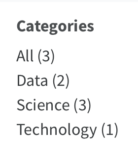
true/numbered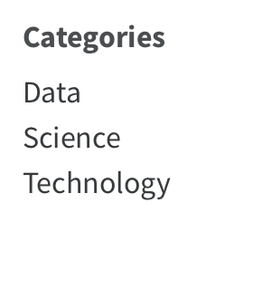
unnumbered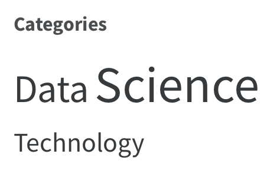
cloudUse listings for _ projects _
https://ivelasq.rbind.io/project
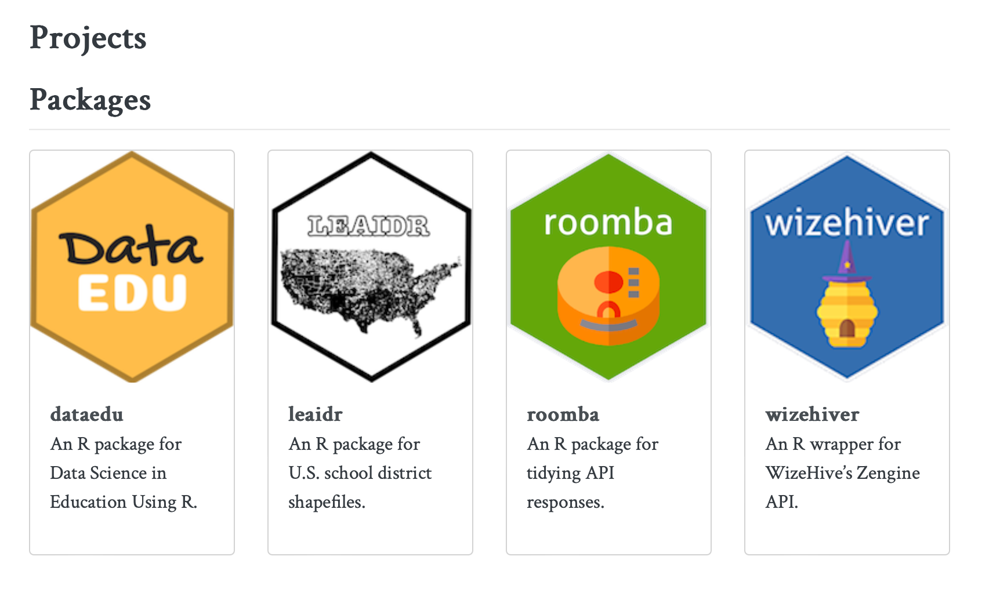
Use listings for _ talks _
https://meghan.rbind.io/talks/
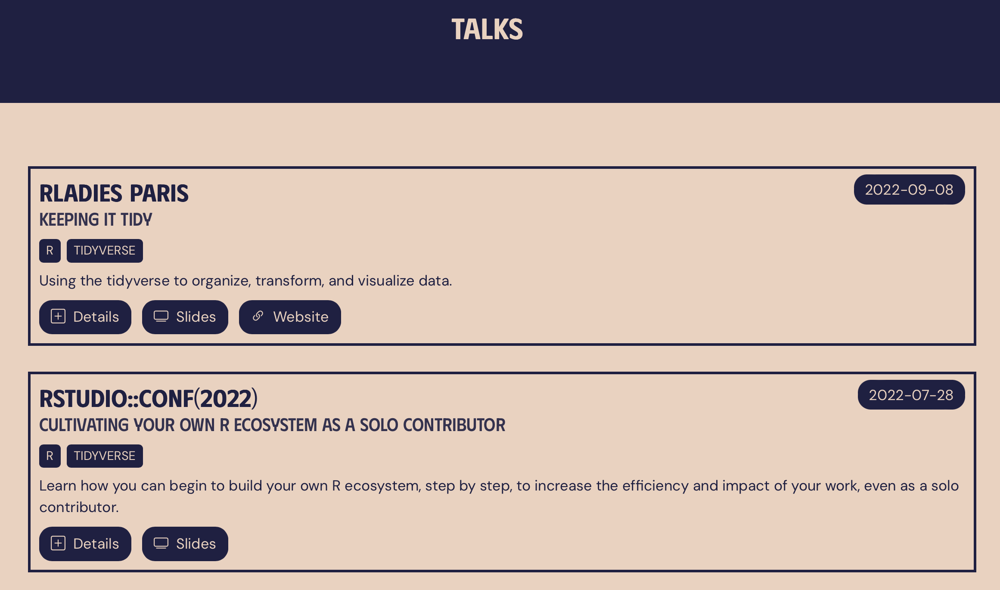
Use listings for _ publications _
https://mickael.canouil.fr/publications
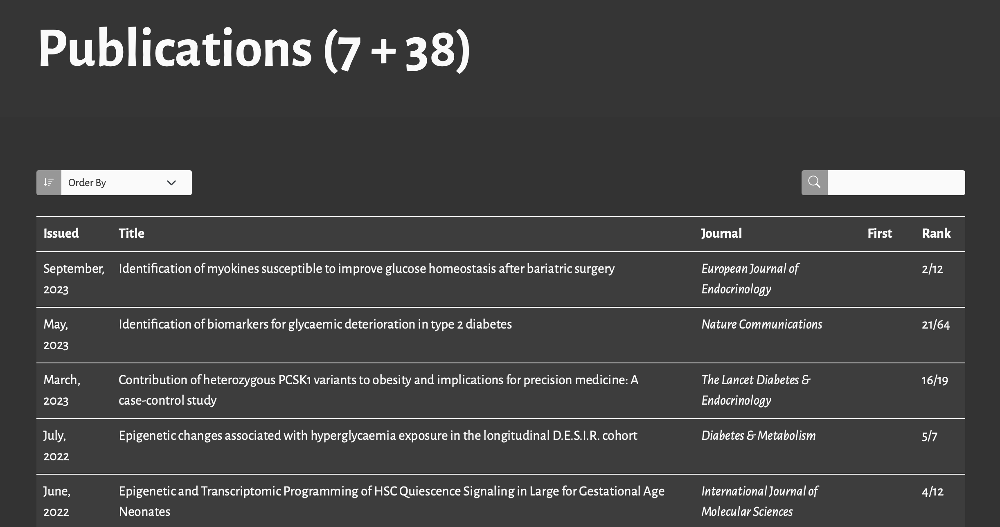
Use listings for …
contents can be a YAML file
projects/index.qmd
---
title: Projects
listing:
contents: projects.yml
type: grid
max-description-length: 250
---project/projects.yml
- title: Predicting House Prices with Machine Learning
path: https://example.com/house-prices
# Photo by Breno Assis on Unsplash https://unsplash.com/photos/aerial-photography-of-rural-r3WAWU5Fi5Q
image: images/breno-assis-r3WAWU5Fi5Q-unsplash.jpg
description: >
This project involves using machine learning algorithms to predict house prices based on
various features such as location, size, and amenities. It includes data cleaning,
feature engineering, and model selection.
categories: [Python, Machine Learning, Data Cleaning]
date: 2024-01-01
...path can be a relative path to a file in your site, or a URL
You can use Listing Fields, or create custom ones.
contents can be a YAML file
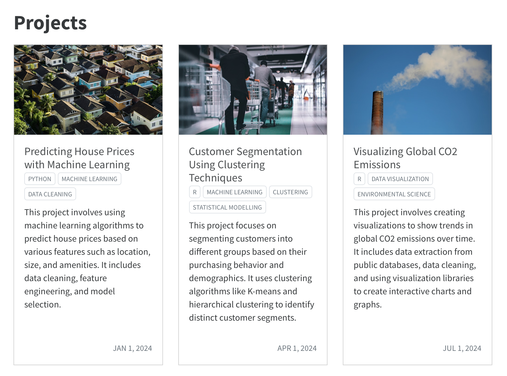
Simple Customization: Select Fields
Use fields to specify which Listing Fields are displayed.
E.g. Exclude date:
listing:
contents: projects.yml
type: grid
fields: ["image", "title", "categories", "description"]Simple Customization: Rename Fields
Use field-display-names to provide a different label for a field
Mostly useful for type: table.
E.g. Rename title to Project
listing:
contents: projects.yml
type: table
field-display-names:
title: ProjectYour Turn
Switch to
type: tableOmit the
imagefield from the listingChange the name of the “Categories” column to “Skills”
Brainstorm: What could you use a listing for on your own site?
Advanced Customization
Example: https://www.andrewheiss.com/teaching/
Source: https://github.com/andrewheiss/ath-quarto/blob/main/teaching/index.qmd
- Listing in a custom location on a page
- More than one listing on a page
- Custom Template
Custom Location
teaching/index.qmd
---
title: "Teaching"
listing:
id: ay_23-24
contents: ay_23-24.yml
---Give the listing an id
teaching/index.qmd
## 2023–24
:::{#ay_23-24}
:::
## 2022–23Use the id in a fenced div where you want it to appear
Multiple Listings
teaching/index.qmd
---
title: "Teaching"
listing:
- id: ay_23-24
contents: ay_23-24.yml
- id: ay_22-23
contents: ay_22-23.yml
---Make listing an array, use ids
teaching/index.qmd
## 2023–24
:::{#ay_23-24}
:::
## 2022–23
:::{#ay_22-23}
:::Place listings in the page by id
Custom template
teaching/index.qmd
---
title: "Teaching"
listing:
- id: ay_23-24
contents: ay_23-24.yml
template: ../html/teaching/listing.ejs
---Provide an ejs file to template
../html/teaching/listing.ejs
```{=html}
<div class="teaching">
<% for (const course of items) { %>
<div class="course-entry">
<div class="logo">
<% if (course.url) { %>
<a href="<%= course.url %>" target="_blank"><img src="<%= course.logo %>" alt="<%= course.title %>" title="<%= course.title %>" /></a>
<% } else { %>
<img src="<%= course.logo %>" alt="<%= course.title %>" title="<%= course.title %>" />
<% } %>
</div>
<div class="body">
<p class="course-title">
<% if (course.url) { %>
<a href="<%= course.url %>" target="_blank"><%= course.title %></a>
<% } else { %>
<%= course.title %>
<% } %>
</p>
<p class="course-details">
<span class="course-number"><%= course.number %></span> |
<span class="course-university"><%= course.university %></span>
<% if (course.role) { %>
| <span class="course-role"><%= course.role %></span>
<% } %>
</p>
<p class="course-description"><%= course.description %></p>
<ul class="course-semesters">
<% for (const semester of course.semester) { %>
<% if (semester.url) { %>
<li><a href="<%= semester.url %>"><i class="fa-solid fa-building-columns"></i> <%= semester.name %></a></li>
<% } else { %>
<li class="no-link"><i class="fa-solid fa-building-columns"></i> <%= semester.name %></li>
<% } %>
<% } %>
</ul>
</div>
</div>
<% } %>
</div>
```Define how item in items should be generated
Your Turn
Add a listing page to your site:
Create a page to house the listing
Either:
- populate a
.ymlfile with a couple of items (useprojects/project.ymlas a template), or - create some placeholder
.qmdfiles.
- populate a
Add the page to your site navigation
Clean up any template listing pages/files/folders you don’t want